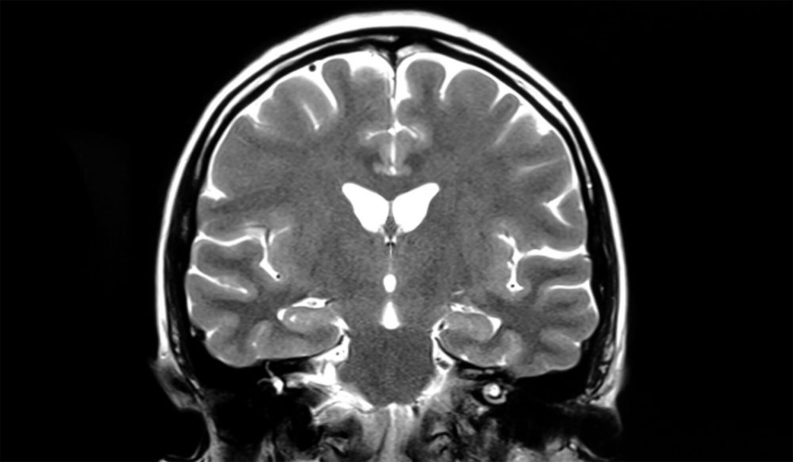

06.09.2021
I’m not showing you this because I love you; I do, but it’s all much more sinister than that.
I want you to close your eyes and imagine you’re sitting in a chair in front of me. I want you to lean back a bit and feel your weight sink into the arms of it. I want you to be sitting comfortably. Breathe in through your nose…
…and when you breathe out let go of any tension, feel the weight fall off your shoulders, we’re going to be here for a short while. You’ll be glad we were. I think you’re really going to like this one.
Where to begin with these two? It began as an innocent joke. She was teaching herself hypnosis for pain relief and he hadn’t switched off for a year. When he asked, slightly drunk, if she could do it to him, if she could make him follow a line of chalk on the floor and cluck like a chicken, neither of them really thought anything would happen. He didn’t think he’d cry so softly when she undid all the knots in him, she didn’t expect to so profoundly get off.
That was about two months ago. He’s seen her once a week since then and every week she’s bought a new book or read a new article, watched a video from one of these “Dark Care” gurus she’s suddenly heard so much about. Nobody had ever indulged her like this, she'd always vanished into her work alone. He’d always been a willing participant in his women friends’ social experiments: anthropological surveys and little cards with deep questions on them. This history had cultivated a pavlovian response, he never felt as seen as when he was being studied forensically. So he was happy to be her science project.
Bring your senses back to the present moment now, and just focus on this.
“Close your eyes,” she said.
“Why,” he said.
“Cause I said so.”
“You’re not going to jump-scare me, are you?”
“No…”
He closed his eyes and felt alone on her couch and gently choked by the smell of her scented-candlelit sitting room, her laboratory. Now in his mind’s eye he re-rendered the dark glow in the room more sensuous and gothic than maybe it had really been, and when she shifted around in the chair across from him—the only sound except his own breathing, no wind brushing through the pine trees outside—he just had to imagine the way she moved. Little flames on the table and either side of him had left a hypnagogic impression: beads of purple and green on the inside of his eyes floated up together as if he were sinking below.
He held his hands in his lap as she recited the usual incantations about letting go, slowing down his breath, leaning and feeling weight shift around him and fall away; I want you to, I want you to, I want you… But a kernel of tension stayed with him. Tonight was another first time.
They’d talked about his work, inevitably, but then she’d shown him this urgent hour-long YouTube video about the CIA and declassified research from the 1980s, which she’d found while researching her next screenplay. Astral projection, remote viewing, the modulation of the brainwaves’ vibrational frequency to achieve the transcendence of time and space by means of subliminal messaging, microdosing, secret schools of meditation, hypnosis. All that. No takers. Fuck. She should have been more explicit about it. Tonight: he’s only interested in the imago.
The concept was invented by Carl Jung in 1911; he may have argued that like all good ideas it had merely been discovered. Traced along his intellectual history the imago was the famous archetype in its larval stage, his first draft, and had less to do with that primal imagery burned into every human from birth than with one’s own peculiar childhood. Like the archetype the imago is an ideal made accessible to us only by its hollow imitations, rare striking resemblances to a forgotten original. They are encountered in childhood maybe only once, maybe only in the subconscious, and in our adult lives we look for them everywhere.
(You may want to stop me here and ask how someone can “encounter” something—experience an event—only in the subconscious. You may remember me earlier telling you to close your eyes, so now we’re both being naughty.)
Thomas wondered, having read this online, if it were possible to search for his imago: the real thing. Erzsebet became determined to find her.
He was in it now. Even when he was relaxed in waking life he had a forthright, verbose intensity about him. She understood that this was just the way that he was, that his chill demeanour was a Restricted Code—language as a kind of video-game menu of deferential soundbites—and these passionate highly technical hundred-mile-an-hour staccato-bursts of evangelic elaboration were his real, relaxed state. Still. She liked getting him drunk. She liked it when he only said exactly what was on his mind. She thought he was sweet when he wasn’t so quiet; she thought it was rude to keep oneself all to oneself. But his posture was different now. He looked soft and sleepy. (The word that she was trying not to think of was “malleable”, which she knew contained the latin word for “hammer”, but also evil.)
The whole arrangement between them was only implicitly very sexual, which she’d enjoyed, and she never wanted anything too serious. But it still hurt that he didn’t have time for her, and the time he had he put on a calendar in his calendar app he called “Other”.
For this crime she was always happy to make him wait while she did her thinking, while she made her preparations, double-checked her notes in joined-up letters and the scripts she’d saved from shadowbanned Instagrams. He wasn’t going anywhere without her counting up to ten and clicking her fingers. Tonight she was wondering what it was that he really wanted. Why he couldn’t accept love when it was just given to him. She wondered what to do with her pliable block of stone, her blank page, her little ball of dough.
“Thomas, can you still hear me? You haven’t fallen asleep, have you?”
“No,” he said, absently. “I can hear you.”
“Remember the… session… when you couldn’t stop thinking about that ex of yours? And we decided that you weren’t thinking of him at all, and that that’s just what ghosts are and always were: malignant thoughts that thought for themselves. And we replaced that ghost with something better?”
“Mhmm?”
“Mhmm.”
Silence.
She folded her arms in her massive jumper, either stern or self-soothing. “Ask me what it is that I want to do with you.”
“What is it that you want to do with me?” he asked, as if almost fully sleeping.
“Absolutely anything I want,” she said. “Is that alright?”
“Mhmm.”
“And you’re not going to remember me asking that once I wake you up, are you?”
“No.”
She stretched out, having fun again. “It’s like I’m you,” she smiled, hiding behind one hand, a couple of fingers. “It’s like I’m programming one of your little computers.”
“Mhmm.” He smiled.
Erzsebet sat upright with new clarity and intention. “There’s no great process here. These are uncharted depths, for us. For our fledgling practise. So I’m just going to tell you to go somewhere and tell me what you see.”
He nodded.
“I want you to think about those… blurry places, between your memories of childhood. Not the hits. The kind you’ve never asked about whether or not they really happened, if they were just dreams or vivid imaginings. I want you to think about… women? Women. Who you saw and maybe knew when you were small, or who you think were in some way prominent in your mind. Maybe you only saw them a couple of times, maybe often for a short while. Maybe once. Can you do that for me?”
“Mhmm.”
“Tell me about them.”
He was quiet for a while. Then he began to list job titles, then specific physical details. Then when he got his first real bike came the moody older girls around town who weren’t much older than him, but much bigger. She loved them, but she pushed him back in time. Back into the blurry places and now taking detours: what was your first memory of really admiring someone? Did you ever see something on TV you shouldn’t have? Nothing he could think of quite looked like it. Then,
“There was… one…” he started. “I have this image.”
“With a hard ‘guh’?” She smiled at him like he could see her. “Tell me about it.”
“There’s this woman in my house,” he said.
“How old are you?”
“I don’t know. Too young to have started counting. It’s like I’m in a ‘before’ period, it’s listless. I hadn’t started going to school. There’s no structure here. Nothing to space the time out.”
“That’s exactly where I want you to be,” she nodded. “Tell me about this woman. Who is she? What’s her name?”
“I’m… not sure.”
“Is she a friend of your mother’s? A relative? Maybe a neighbour who moved away?”
“No, I don’t know. I don’t recognise her.”
“What does she look like?” She asked. “Is she pretty? Did you think she was pretty?”
“She’s…”
Silence, except for a chunky black candle in a glass case. Wick faintly hissing now.
“She’s very interested in me. I’ve never been so aware of being looked at.” He was quiet again. She wondered if he was reliving the whole incident.
“Keep talking to me, Thomas,” she said. “Tell me what’s happening.”
“She’s beautiful. I’ve never seen anyone or anything so pale. She’s looking at me from across the living room… and the pupils of her eyes are just these black pits. I don’t know what she sounds like. She’s talking to my mother but, I can’t hear a voice. I think she’s wearing perfume. I can’t place the smell—it’s new to me, maybe it references nothing in nature—but it fills my nose and I can taste it coming back out of my mouth. It’s good.”
“What else is happening?” asked Erzsebet. “Do you remember what… context this is in? Why is she here?”
“No. I don’t remember anything before this. Nothing after.”
Erzsebet thought about that for a while, watching something anxious or impatient move within him. “How does she make you feel?” she asked.
“There are these biscuits on the table,” said Thomas. “Every time we had guests, especially guests with other children, my mother laid out this tray of biscuits and little cakes all suffocating beneath this sweaty clingfilm shroud. And that always made me feel nervous, because there was this high-wire act where you were offered this thing and it was rude not to take any but if you failed to accurately gauge how much you were allowed to take, or if you took it in what you didn’t know was the improper way, there would be consequences as soon as they’d left. So I made great efforts to just avoid this situation. But every time we had other children and their parents around I still felt that way, because I knew that these other children were risking walking into this trap. I always wondered what happened to them once they were gone.”
“Are you feeling nervous now, Thomas?” Asked Erzsebet. She noticed that she was leaning forward; she had made a rule early on to never touch him, not while he was under, but…
“I’m fascinated,” he said. There was something more than warm nostalgia at the crook in the corner of his mouth.
“Why?” She asked.
“She has no children. She’s eating them all.”
“What?”
“The biscuits.”
“Right.”
He broke out into a full smile like he never did, like nobody was watching. “She knows this. She knows exactly what she is demonstrating to me. There is sickly strawberry syrup and fluffy white cream on her lips and she is dropping little crumbs of icing and pastry on the freshly-cleaned carpet and she is looking right across the table at me the entire time and nobody has ever been so interested in me in my short life. It’s like she’s the first adult I’ve met who remembers what it was like. I don’t think we’ve spoken a word to eachother, but we share this knowledge. It’s like we communicate secretly. It’s like she’s inside my head.”
“She is,” said Erzsebet, taking a slow, deep breath in through her nose. “Are you glad that we’ve found her again? That I took you to this warm, dark place?”
“Mhmm.”
Erzsebet noted that change in tonality. He was ready now to come back up for air, out from the clearest place through the soft wall of muzzled sleep. She had other ideas.
“Does it hurt that you won’t see her in this waking world, whoever she is?” She asked. “Your imago, your ideal creature?”
He let out some obscure mumble as if holding that thought in his mouth.
Erzsebet stood up from her chair, checking to see if her hands were shaking. “What if we decide that that’s not what she is at all.” She slowly walked around the table between them. “What if we decide this is just what ghosts are, and always were? What if we decide to replace that ghost with something better?” She swallowed and put her hands on his shoulders as she rested her knees at either side of his waist, shuffling down onto his lap. “What if we replaced it with me?”
Silence, except—if your ears were little enough to hear it—watermelon candlewax melting like glacier.
He smiled, slowly but irresistibly, like he had when that sugar-predator looked across a tray of confections and spotted him.
“Would you like that, Thomas?” She asked, resting her arms around his shoulders. “I don’t want to monopolise your time, or your thinking. If it helped I could flip your love on and off like a switch whenever I wanted you not to need me. Maybe five days a week I promise you total freedom.” She pressed little kisses on him inbetween breaths, and in the sleep she made for him he leaned into them: micromotor, ideomotor moves people make when they don’t know they’re pulling the glass across the Ouija board’s alphabet. “But when I want you I want all of you. I want to be that shadow at the back of your head, not another woman failing to cast it. I think you come to me because nobody else has ever tried to have you in the way that you want to be had. Nobody else would ever look at you and think to break you gently. None of them understood what it is you really want. None of them thought they had what it takes to give it to you. None of them would ever be so presumptuous. I am.”
His head fell into her shoulder when she held his hair—fingers grazing against a secret zone at the back of the neck, where the skull opens up to the spine—and his whole body moved and filled as he breathed in, too slack and peaceful already to sigh with relief.
“Tell me you’d like that,” said Erzsebet, with as much experimental mischief in her heart as when she first instructed him to, literally, follow a line of chalk along the floor with his nose, as when she told him to remember nothing of it. “Tell me you want me to disassemble you, sew you back together again, rewrite your machine code in cursive.”
She felt a warm, happy tear rolling down her shoulderblade, or so she thought, when he whispered into her: “she’d hate that.”
She pulled out, after a moment, from the knot they’d made and saw that his eyes were wide open and empty. “What’s wrong?”
“She thinks it’s funny,” he said, transfixed by nothing.
“What?” Her slow and sleepy heartbeat began again. She stood up from him and her chest filled with sick shame at the sight of her broken toy. “What do you see?” She shut his eyes like he was an unsteady corpse. “Tell me what you see.”
“My mother is leaving, and she can’t see this woman waving her fingers in front of her eyes while she looks for her keys. She thinks it’s funny. She’s looking at me. This strange woman. I remember everything in this house except her being in it. She isn’t in it. She never was. I would have remembered.”
Erzsebet tripped over something as she backed away from the panic attack, trying to think clearly through what felt like dizziness. Hot white liquid wax pooled on the floor.
“It’s all still there,” said Thomas. “The food on the table. She ate and ate and it’s all still there.” He sniffled and smiled. “She’s always still hungry.” His face turned, appalled again as he looked up from the couch, watching no-one approach him. “I’m alone with her now. I can’t have been left alone. I can’t have been left with her.”
Erzsebet swallowed hard, seeing a chance. “Thomas who were you left with? You weren’t left with her,” she said, not convincing herself. “Who would your parents have left you with?”
Thomas was quiet, now crying, terrified, joyous. “Not this. Never this. Look at you,” he broke, straight out of mere survival instinct. A fight-or-flight binary was transcended immediately; now unwound from eachother, competing desires ran like greyhounds to be fulfilled. “I’ve never seen anything so pale. She smells like fresh air from somewhere else. Spit in my mouth tastes like tears. Glossy dark claws nip at the nape of my neck.”
Erzsebet placed the candle back on the table, carefully stalking her way back to where she stood in front of him, as she imagined a perfect creature would; not some forgotten traumatiser casting a shadow over his life, she thought: the shadow. She returned the sleeping man’s gaze. “Thomas, I want you to look at me. I’m in the room with you. I’m in your house. You recognise me. I want you to look at her, and I want you to look at me move as she moves, I want you to see how she moves as I move, how you imagine me move when you imagine me. Just focus on us. I want you to close your eyes. Breathe in through your nose…
…and when you breathe out, feel the fear fall away from you. I want you to feel the weight of me on you. If you must, mistake it for hers. I want you to look at her and just see her image, like she’s on a screen, like you’re only imagining her in your mind’s eye. Can you feel me on you?”
His breathing was becoming slower at her instruction, at her guidance. She was on him again, cupping his face in her hands. Breath circulated between them: in, and out, and in, and with her nose touching his she imitated his pace and depth as she led him back to a normal rhythm. For a moment, it was no longer clear to her who was following who. She wondered if the pale thing breathed too.
Bring your senses back to the present moment now, and just focus on this: where you’re sitting, the weight of your arms, my voice in your inner ear.
There’s no rush to get up. It’s not time to leave just yet, I’ll tell you when it is, but make yourself aware again of your surroundings and come back in your own time. It’s dark out here—pitch black except for the soft light from inside, which stops just short of our feet—but the air is warm and you feel a sense of perfect comfort. Feel the summery night air on your skin, smell the flowers. Visualise the dark glow shining out through the patio door, sensuous and gothic as it really is; open your eyes and see the scene inside.
“I want you to remember this,” she whispered into his ear. “I want you to remember me being with you in your house. In this dark, warm, blurry place. I want you to remember only this feeling. Nothing before, nothing after.”
“Mhmm.”
“I’m going to count you up from ten now, then I’m going to snap my fingers as I always have. And as you always have, you’ll return to me from the sleep I make for you. Then you’ll open your eyes, and you’ll be back in the room with me. She’ll be gone. You’ll wake up in my house. Okay?”
“Mhmm.”
Erzsebet held him as she counted, slowly and irregularly. The seconds moved when she told them to, when enough of him had returned to the soft volume in her arms at every increment. Finally she kissed him and snapped her fingers. Then after a few long moments of stillness and silence, absolute silence in her house, Thomas rubbed the sleep from his eyes and opened them, looking for Erzsebet.
He looked for her everywhere.